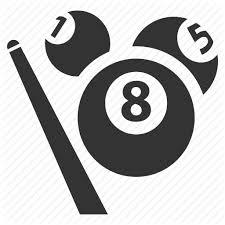
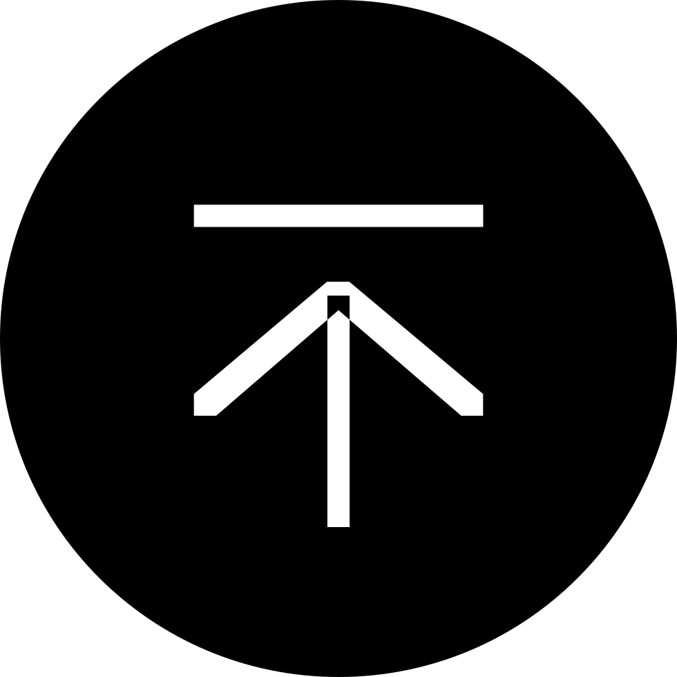
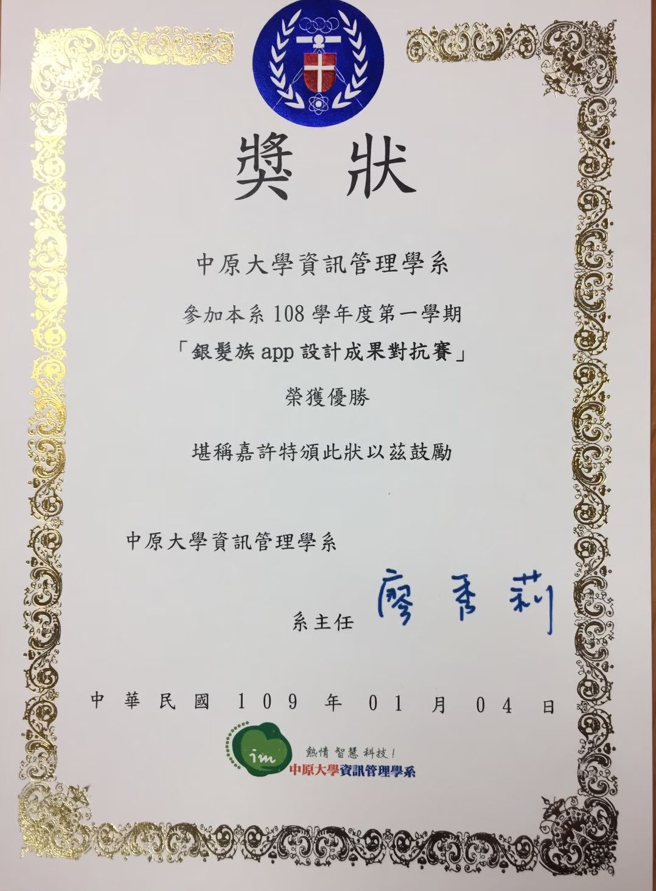
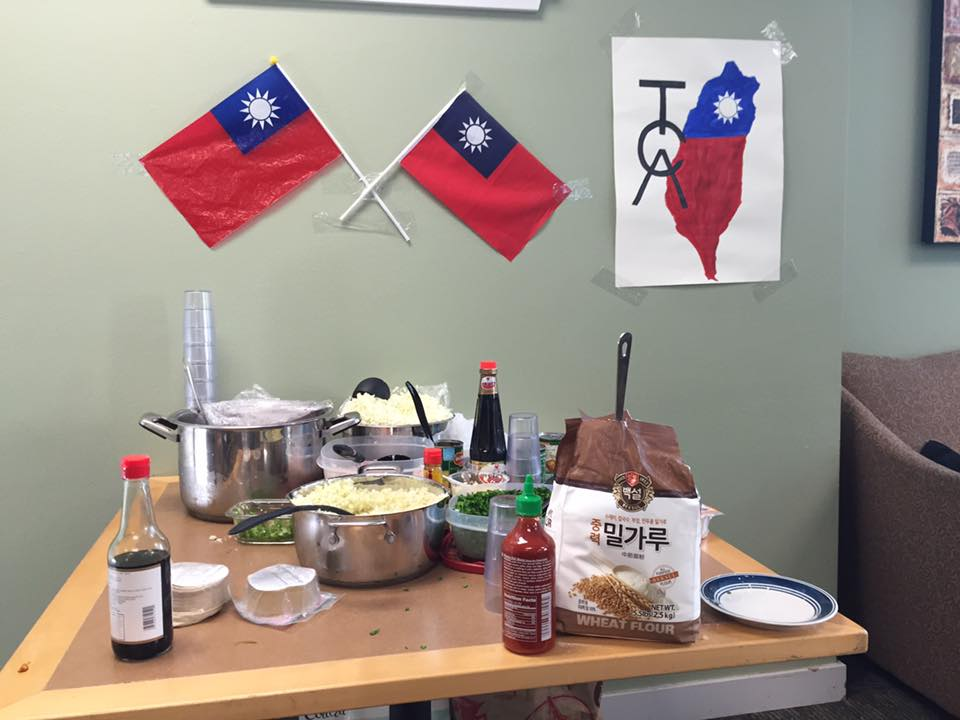

中原大學-資管系
CYIM
 聯絡資訊 Contact Info
聯絡資訊 Contact Info


下拉查看關於我 Drop Down For My Personality
關於我 About Me
個性不算外向，但樂於與人交談，享受完成程式後那種立即的成就感，希望能將創意、個人特色及程式能力結合，把腦袋中有趣的主題，用程式將思維呈現出來；喜歡跳脫舒適圈，那種不確定性且冒險的過程，才能透過自己的努力達成自己想要的結果，樂於嘗試不同的挑戰、學習新知識，平常透過閱讀英文文章及影片（CNN、TedTalk等）練習英文、透過閱讀網路文章、部落格(Finlab、Medium等)學習程式方面的新知識，不斷努力精進自我。
 興趣嗜好 Passion & Hobbies
興趣嗜好 Passion & Hobbies
 Reading
Reading
Coding Life
 Basketball
Basketball
Pool Ball
 Music
Music
 Traveling
Traveling


Programming Skills
程式技能
網頁相關
HTML/CSS
網站製作、排版、W3C、Bootstrap、CSS Animation、Filter、Transform等各應用。
JavaScript/jQuery
了解基礎語法、網頁功能撰寫，例如購物車Cookie建立、讀取、刪除、控制，另外還有修改CSS、onclick、及Toggle等各應用。
Wordpress
自己有使用阿里雲ECS架設wordpress.org版本，自行設計網頁，其中也包括Linux cmd語法操作、後台資料庫修改等，亦有使用wordpress.com版本幫他人架設個人食品網頁。
Node.js/React.js
於中原108-2學期參加企業資源規劃課程，該課程與大陸用有雲合作，授課內容包括前後端（react.js、node.js及eclipse)，學習架設基本的企業後台操作網頁，包括新增、修改、刪除、查詢等基本功能。
程式語言
Python
了解基礎程式語法應用、爬取網站資料加以應用及畫圖、分析等。
Visual Studio/Unity
了解各C語言語法應用、Unity VR/AR設計、腳本撰寫、API連結應用等。
JAVA/Android Studio
了解基礎程式語法應用、Android APP基本開發，包括QR Code產生、掃描、NavBar等等。
Swift Xcode
於中原107-2學期參與ios程式設計課程，另外也透過Stanford的cs193p課程影片自學，成果包括基本的翻卡牌遊戲、
資料庫
MySQL
網頁、APP/Android Studio資料庫連接、資料儲存、讀取等、資料庫程式語法撰寫、正規化概念。
Firebase
與Android Studio連結、資料庫、登入註冊等功能使用。

Other Skills
其他技能
SEO
Google GA、
80%
Adobe Photoshop / Illustrator
圖片、插圖、海報設計
80%

English Proficiency
英文相關
IELTS : 6.0
GRE :V+Q 314 , AWA 3.5
 求學經歷 Experiences
求學經歷 Experiences
課程、社團、校內活動
2019/09-2020/01
銀髮社群
於中原大學資管系的系統分析與設計課程，與銀髮族協會合作並撰寫幫助銀髮族聚會的app，於系內班際競賽中贏過隔壁班獲勝。
2019/02-2019/06

軟體專案管理課程夜市擺攤活動
修讀中原大學資管系的軟體專案管理課程，於期末舉辦夜市擺攤活動，試著讓當地居民及逛夜市的人們體驗科技對於生活所帶來的改變，我們所推出的夜市科技雷射槍，透過程式碼能輕易改變遊戲規則、標靶角度等，獲得熱烈好評，並於共25組的競賽中滿意度問卷調查及參與人數獲得第三名。
2018/09-2019/01

真善美社會福利基金
於中原大學資管系的第一學期，修讀管理學課程，參與志工服務，幫助真善美社會福利基金會內的憨兒小朋友們(輕-中度)體驗我們所規劃的活動，盡可能的幫助這個族群，也對於這個族群有更多的認識。
2016/09-2017/08
台灣文化社 TCA
就讀於華盛頓州Green River College擔任台灣文化社PR，向各地推廣並介紹台灣文化，期間推動各大節慶活動，包括包水餃、中秋烤肉、雙十活動、農曆新年團圓火鍋等等，也帶領學生參與華盛頓大學舉辦的夜市活動，除了學會與世界各地的人打交道，也讓人們有機會能夠參與並認識台灣的文化。
2016/09-2017/06
Green River College校內5vs.5籃球比賽
於華盛頓州Green River College，參與校內5 vs. 5籃球比賽奪得冠軍，獲得學校吉祥物鱷魚T-shirt。
學歷Education
大學(大三、大四):
中原大學 Chung Yuan Christian University
大學(高三、大一、大二):
綠河社區大學 Green River College
國中、高中:
復旦高中 Fudan High School